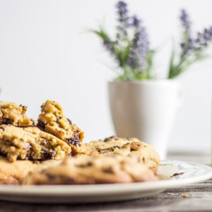
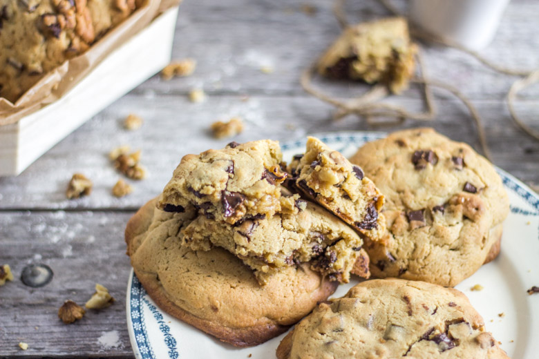
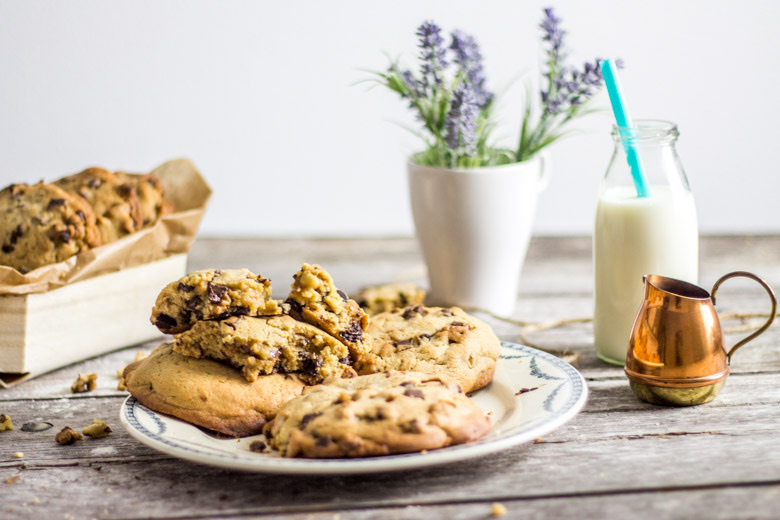

Americain cookies « presque » comme les cookies de levain bakery

Après les fêtes de pâques, me revoilà avec une nouvelle recette et une nouvelle vidéo de mes americain cookies venus tout droit de New-York
Il y a tout juste quatre mois de ça (tout pile!!!) nous avons eu la grande chance de visiter New York… J’avais prévu de faire super article sur cette ville magnifique mais c’était sans compter que je perde toutes mes photos 🙁 . A défaut d’un article « voyage » sur New York, je vais vous parler d’une recette qui vient tout droit de mon voyage à la grosse pomme et il s’agit des cookies de levain bakery!!! Enfin non c’est faux, ce ne sont pas exactement à 100% les mêmes vu que la recette de leurs cookies est gardée bien secrètement, mais il s’agit d’une recette qui s’en rapproche (on les appellera alors americain cookies façon levain bakery) et ce sont pour moi de loin les meilleurs cookies que j’ai pu faire! Pour ceux qui ne connaissent pas cette enseigne il faut absolument y aller le jour où vous décidez de vous rendre à New York car c’est « la » boutique (toute petite) qui propose les meilleurs cookies de New York (du monde même!!). J’avais d’ailleurs été surprise la première fois où nous y sommes allés car il y avait une queue interminable dehors alors qu’ils ne vendent que des cookies (presque) et seulement 4 parfums y sont proposés. Bref, c’était vraiment délicieux! Une des particularités de ces americain cookies est qu’ils sont très gros! C’est d’ailleurs la seule vraie info que j’ai pu obtenir de levain bakery : chaque cookie pèse 6oz soit 170g et autant dire que c’est plutôt pas mal. Avec cette recette j’ai donc réalisé 7 americain cookies de 170g chacun mais vous pouvez les faire plus petits. Pour la petite anecdote, nous qui sommes de gros mangeurs (très gros même), nous n’avions plus faim après un seul cookie la première fois que nous avons été en acheter malgré un réveil précoce et une loooongue balade dans central park!!! La prochaine fois je pense que j’en ferais 14 de 85g chacun, le secret étant de ne pas les aplatir avant la cuisson pour qu’ils restent assez épais. Je vous laisse découvrir cette recette que j’ai aussi filmée car c’est toujours plus sympa d’avoir les explications en images! Vous me direz ce que vous en pensez 🙂
Ingrédients
- Farine de blé (ou farine à pain) - 420g
- Beurre mou - 230g
- Oeufs - 2
- Pépites de chocolat ou chunks - 250g
- Levure chimique - 3g
- Bicarbonate de sodium - 1/2 càc
- Sel - 5g
- Vergeoise - 100g
- Sucre en poudre - 100g
- Extrait de vanille - 5ml
- Noix - 100g
Instructions
- Dans un bol, mélanger la farine, la levure, le bicarbonate de sodium et le sel. Réserver
- Couper le beurre en morceaux
- Dans le bol de votre robot, battre le beurre à vitesse moyenne à l'aide de la feuille
- Ajouter la vergeoise puis le sucre en poudre tout en continuant de remuer
- Battre jusqu'à ce que tout le sucre soit incorporé
- Mélanger les œufs et les incorporer en deux fois dans le bol contenant le beurre et le sucre
- Mélanger puis ajouter l'extrait de vanille
- Ramener la pâte qui se trouve sur les rebords vers le centre avec une spatule
- Ajouter la farine et mélanger jusqu'à ce qu'elle soit totalement incorporée
- Couper grossièrement les noix
- Incorporer les noix et le chocolat et mélanger avec une spatule pour les répartir uniformément dans la pâte
- Diviser la pâte en 7 cookies de 170g (version américaine) ou en 14 cookies de 85g (pour une version plus "française")
- Placer vos pâtons dans des moules à cupcakes ou sur une plaque à pâtisserie et laisser reposer 30 minutes au frais
- Enfourner sur une plaque à pâtisserie pendant 20 minutes à 180° (sortir du four quand ils sont dorés sur le dessus)
- A la sortie du four les cookies sont très tendres à l’intérieur et le chocolat bien fondant!
- Conserver dans un récipient hermétique (s'il en reste!!)


Les tips de la communauté
Astuces
- le de faire des cookies plus classiques qui seront moins bourratifs.
- de faire des cookies plus classiques qui seront moins bourratifs.
Variantes suggérées
- américaine est enoooorme en effet alors effectivement commencer par des plus petits est sans doute bien plus raisonnable!!!
- 100% choco et ça se rapprochait pas mal!
- maxi me plaisent énormément !!! je découvre par la même occasion un magnifique blog … @ très bientot pour une prochaine visite
- reine des neiges !
Ajustements signalés
- vraiement que je m’y mette aussi à la vidéo 🙂 gros bisous bravo !
- que je teste ta recette pour me rappeler des souvenirs et voir s’ils battent ceux au Nutella 🙂
- absolument que j’essaie ta recette, je vais peut-être attendre de finir mon colis ravitaillement français mais la recette a basculé dans ma Emergency To-Do List 😉 ! Bises et très bonne semaine à toi !
- chance si seulement je pouvais me jeter dans ta valise!!!!! Gros bisous Marie et bonne semaine à toi aussi <3
- cocher la case « Me prévenir des réponses à ce commentaire par e-mail » quand on laisse un commentaire pour lire ma réponse directement…
- que j’essaie c’est une bonne idée!